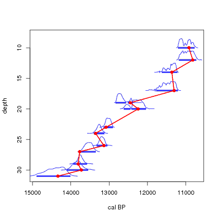

Simulation of accumulating sediment (yellow blocks with black lines). As the sediment accumulates through time, changes in accumulation rate will cause fluctuations in the age-depth curve. Often only few samples will be dated (red crosses), and on those few dates an age-depth model (red line, linear interpolation between dated points) needs to be constructed.

A Bayesian way to produce age-depth models constrained by chronological/stratigraphical ordering of the dates. Material deeper down in a core will be older than material further up, so, we know that any age-model should increase monotonously, and not show any "leaps back in time". We simulate calendar ages from each of the calibrated C14 ages (blue lines), and construct an age-depth model through these points (linear interpolation between the dated levels). We repeat this process many times. If the age-model shows any negative accumulation rates, we reject that model (red lines). If it increases monotonously, without any negative accumulation rates, we accept the model (green) and store it (grey lines). For the Bayesian model based on the prior knowledge of stratigraphically ordered dates, we will only use the accepted age-models (the growing grey blur).
© 2008 Maarten Blaauw (please cite this page when using the graphs).